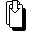
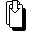

|
A játék irányának megfordítása
 Jelzéstulajdonságok:
Illeszkedik rá:
Jelzéstulajdonságok:
Illeszkedik rá:
Az aktuális színhez illeszkedõ lap (l. SzínSúgó); ezen kívül
vagy  jelzésû lap,
valamint jelzésû lap,
valamint  jelzésû lap,
ha a jelzéslap jelzése a felsoroltak közül való. jelzésû lap,
ha a jelzéslap jelzése a felsoroltak közül való.
Ha kimaradás / kötelezõ húzás van érvényben és az még nem zajlott le, akkor ez csak olyan kártya lehet,
amivel halmozni vagy hatástalanítani lehet.
|
A hozzá tartozó kártyakép igen hasonló a  -hoz,
de az ilyen lapok egészen mást jelentenek: A játék iránya megfordul
(azaz e lap lerakója elõtti játékos fog
következni), és ebben az irányban megy tovább. Újabb
természetesen visszafordítást jelent. -hoz,
de az ilyen lapok egészen mást jelentenek: A játék iránya megfordul
(azaz e lap lerakója elõtti játékos fog
következni), és ebben az irányban megy tovább. Újabb
természetesen visszafordítást jelent.
Fontos, hogy az ilyen jelzésû lapok nem sorozhatók (de a következõ
játékos már rárakhat másik -t).
Ezt mutatja, hogy a jelzés nem rendelkezik a  tulajdonsággal. tulajdonsággal.
Az  tulajdonság jelzi, hogy egy -lap használható
kimaradás ill. kötelezõ húzás "továbbpasszolására" is, pontosabban visszahárítására
az elõzõ játékosra (azaz éppen arra, aki a kimaradást jelentõ lapot lerakta). A játék iránya természetesen ilyenkor is megfordul. tulajdonság jelzi, hogy egy -lap használható
kimaradás ill. kötelezõ húzás "továbbpasszolására" is, pontosabban visszahárítására
az elõzõ játékosra (azaz éppen arra, aki a kimaradást jelentõ lapot lerakta). A játék iránya természetesen ilyenkor is megfordul.
A kimaradás / kötelezõ húzásról és a halmozásról részletesebben az utasító jelzéseknél (
          ),
valamint az ),
valamint az  és az tulajdonság leírásánál. és az tulajdonság leírásánál.
|
|

 Bevezetõ |
Bevezetõ |
 Szabályok |
Szabályok |
 Súgó |
Súgó |
 Paklik
Paklik